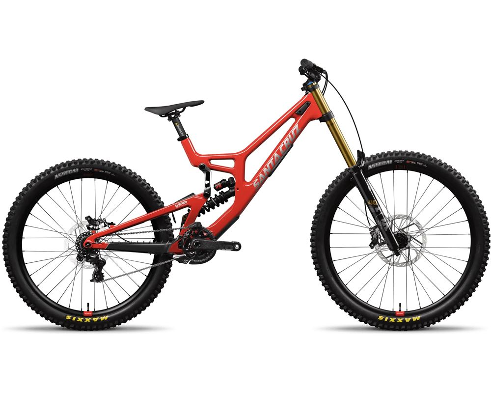
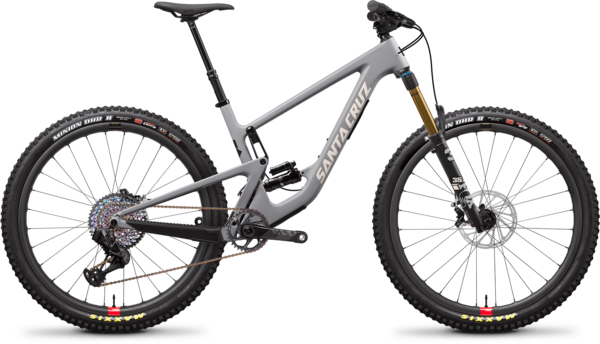
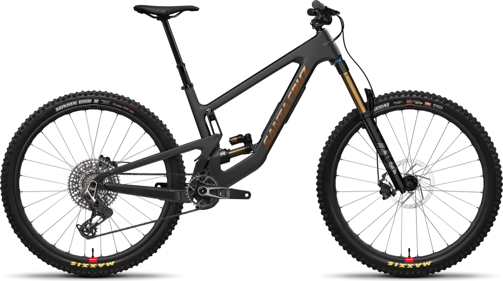

Santa Cruz es una marca californiana iconica, fundada en 1993, conocida por sus bicis de alta gama y tecnologia VPP.
Santa Cruz V10

Precio: $6.999.00
Bicicleta de descenso para los senderos más extremos.
Santa Cruz Hightower

Precio: $5.899.00
Bicicleta de trail/enduro polyvalente con teknologi VPP y 150mm de recorrido.
Santa Cruz Megatower

Precio: $6.999.00
Bicicleta de enduro extrema para los senderos más extremos.